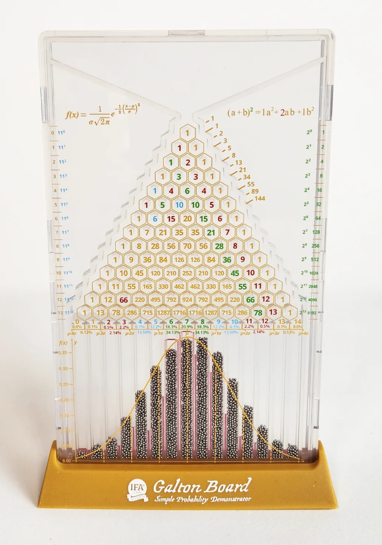

Greetings to all Probability enthusiasts
Como profesor del área de Cálculo de Probabilidades y Estadística, he tenido ocasión de impartir diversos Cursos y Conferencias sobre temas relacionados casi siempre con la Teoría de la Probabilidad y los Procesos Estocásticos. Los incluyo en este sitio como legado para todos los entusiastas de la Probabilidad, de habla hispana, que quieran utilizarlos.